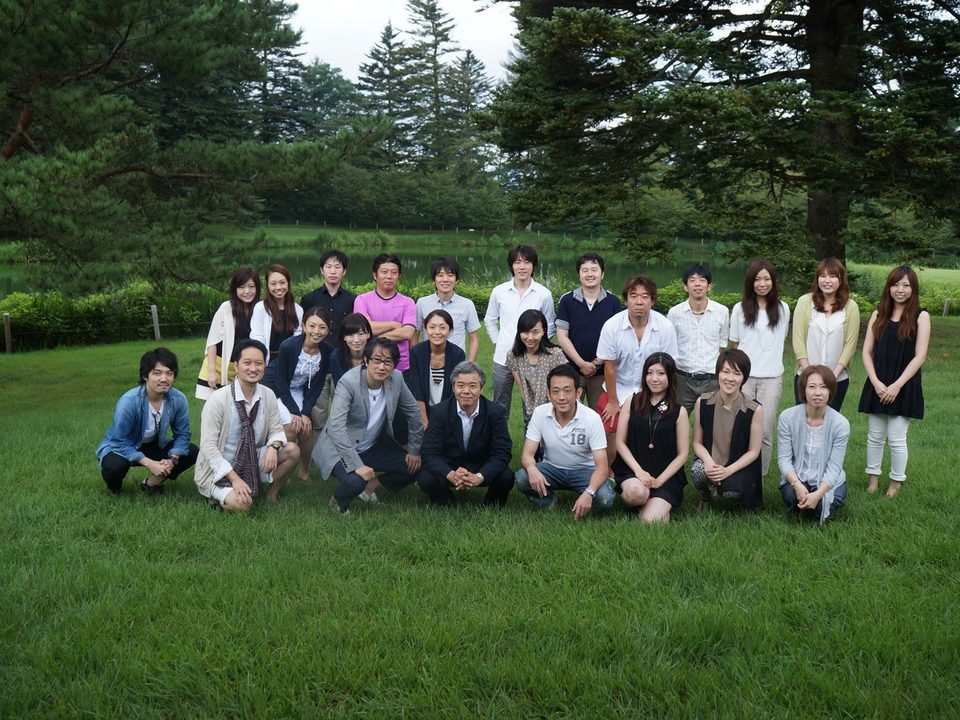
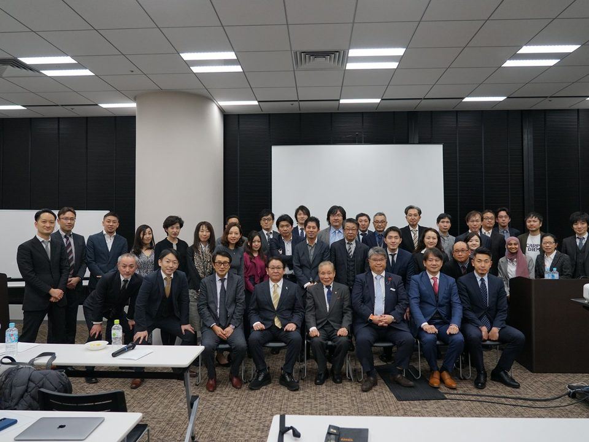
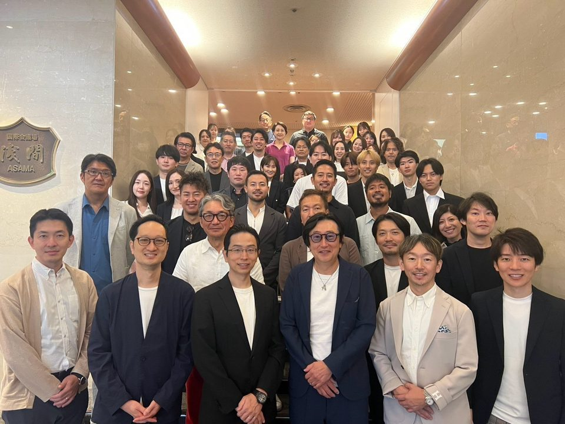

ABOUT
K2について
機能性と審美性が正しく融合した歯科医療を、同じコンセプトで学ぶスタディグループです。
CONCEPT
機能性と審美性が
正しく融合した歯科医療
Academy of Tokyo-Function and Esthetic Dentistry
K2は、K.I.M（Kuwata Institute Millennium）-Tokyo と K-ing（Kitahara Academy）が統合したスタディグループです。K.I.Mの目的「桑田先生の咬合理論を学び、臨床で実践し、世界に普及すること」と、K-ingの精神「よく学び、よく遊ぶ」が融合した、アットホームでありながら本質的な勉強ができる場です。
私たちは、人々の健康に寄与するために歯科という分野の “Roots” を伸ばしていくことを使命と捉え、それは先人たちの築いてきた “Roots” を学び、次の時代につなげていくことだと考えています。
桑田先生の教えは「無理なく・無駄なく・難しくなく」をモットーとした修復治療のベースになるもので、セミナーはそのベースを踏まえて日常臨床にすぐに活かせる内容となっています。仕事も、勉強も、遊びも、適切なバランスで。
MISSION 01
桑田理論を日本から世界に発信していく
MISSION 02
桑田イズムを継承し啓蒙する
LEADERS
名誉顧問と主宰


主宰／ハンズオンコース ディレクター
北原信也Nobuya Kitahara
東京都出身。1989年 日本大学松戸歯学部卒業。1992年 北原歯科医院開院、2000年 ルウミネッセンス開院、2003年 銀座ノブデンタルオフィス開院。2007年 シンガポールライセンス取得（TP Dental Surgeon 非常勤）。2012年 東京八重洲に TEAM東京 ノブレストラティブデンタルオフィス開院。2014年 シンガポール Asia Healthcare Dental Center 非常勤。
プロフィールを見る →STORY
K2のなりたち
- 2007
K.I.M-Tokyo 発足
歯科技工士を中心に、桑田正博先生の咬合理論を学ぶ勉強会として始まりました。
- 2008
K-ing（北原塾）発足
北原信也先生のもとで、審美と補綴を中心に学ぶ勉強会が生まれました。

2013年 K-ing サマーセミナー - 2017
統合し K2 が発足
K.I.M と K-ing が一つになり、技工の視点と審美・補綴を同じコンセプトで学ぶ場になりました。統合を機に、ハンズオンコースを新設しました。

2020年 KIM総会 - いま
例会・サマーセミナー・コース
東京・八重洲での例会、毎年8月末の軽井沢サマーセミナー、年間のハンズオンコースを軸に、学生から50代まで幅広い歯科医師とコデンタルスタッフが学んでいます。

2026年 サマーセミナー
ACTIVITIES